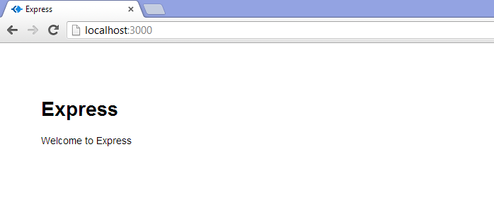
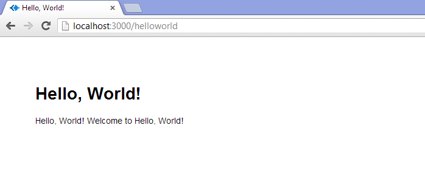
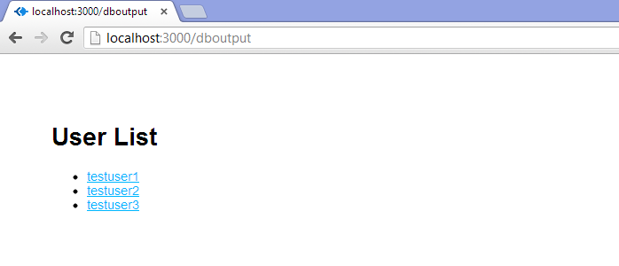
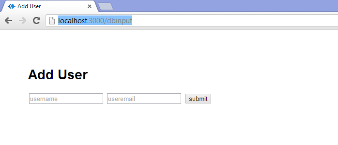
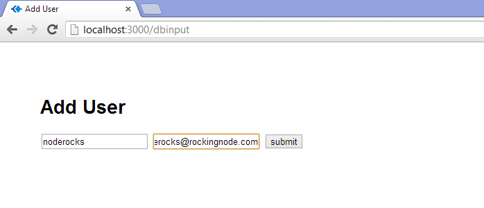
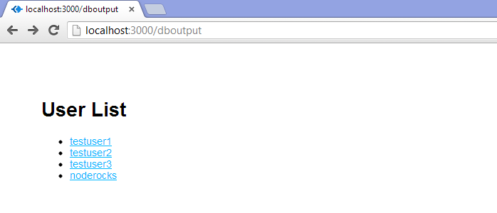

There are approximately one hundred million tutorials on the web for getting a "Hello, World!" app running with Node.js. This is great! It's especially great if your goal is to greet the world and then give up on your web career and go spend the rest of your life as, like, a jockey or something. That doesn't really describe most of us, so we go looking for more tutorials.
In my experience, the "next level" tutorials out there seem about 30 levels further along. We go from "Hello, World!" to building out an entire blogging system with comments. Which is also great, but a lot of times those tutorials assume the reader has done a whole bunch of intermediate fiddling, and they often drop a bunch of big functions on you all at once. I tend to learn best by making lots of smaller, intermediate steps, and I don't think I'm the only one.
I'm not the only one, right?
Well, good news, everyone! I've done the fiddling and read a bunch of tutorials and shouted at my command prompt until things finally worked. I have a web project up and running which uses Node.JS, the Express framework, the Jade HTML pre-processor, and MongoDB for data. I can read to and write from the DB. From there, the sky's the limit.
Here's the deal: I'm going to show you how to get all of this stuff set up. I'll be assuming that you're a front-end developer who knows HTML5/CSS3/JavaScript well enough that I don't have to explain those. If that's you, then this should be a solid primer.
Your app will look pretty, it will connect to a DB, it'll get some results, and it'll do stuff with those results. Then for kicks we'll also make it save data to the DB. Through it all, I will explain what the code does, and how to write it, instead of just giving you massive functions to stare at. We'll go from nothing even installed, to a DB-driven web app written in a language you fully understand, and the foundation necessary to build additional functionality into your app. And we'll do it in about 60 minutes of installation and coding time. Is that awesome? I submit that it is.
Let's go.
If you're really starting from scratch, then getting everything up and running takes a little bit of time. None of it is difficult. I run Windows 8 on my main machine, so it'll be slightly different for those on a Mac or Ubuntu or other *nix system, but it's principally the same thing in all cases.
This is really easy. Hit the Node.js website and click the big green Install button. It'll detect your OS and give you the appropriate installer (if for some reason it doesn't, click the downloads button and grab the one you need). Run the installer. That's it, you have installed Node.js and, equally important, NPM – Node Package Manager – which lets you add all kinds of great stuff to Node quickly and easily.
Now that we have Node running, we need the rest of the stuff we're going to actually use to create a working website. To do that we're going to install Express, which is a framework that takes Node from a barebones application and turns it into something that behaves more like the web servers we're all used to working with (and actually quite a bit more than that). We need to start with Express, because we're going to use its scaffolding to get the rest of what we need (more on that in a second). So let's type this:
C:\node>npm install -g express
This installs some core Express functionality right into our Node installation, making it available globally so we can use it anywhere we want. That's handy. You'll see a bunch of text in your command prompt, mostly a lot of http 304's and GETs. That's fine. Express is now installed and available.
We're going to use Express and Jade, but not the Stylus CSS preprocessor (which people often use in this stack). We're just going to use straight CSS for right now. We have to use Jade or another templating engine to gain access to our Node/Express-based data. Jade's not hard to learn if you already know HTML. Just remember that you really have to pay attention to indentation or things will go badly wrong.
Anyway, still in c:\node or wherever you're storing your node apps, type this:
C:\node>express --sessions nodetest1
Hit enter and watch it go. You'll see something like this:
C:\node>express --sessions nodetest1
create : nodetest1
create : nodetest1/package.json
create : nodetest1/app.js
create : nodetest1/routes
create : nodetest1/routes/index.js
create : nodetest1/routes/user.js
create : nodetest1/views
create : nodetest1/views/layout.jade
create : nodetest1/views/index.jade
create : nodetest1/public/images
create : nodetest1/public/javascripts
create : nodetest1/public
create : nodetest1/public/stylesheets
create : nodetest1/public/stylesheets/style.css
install dependencies:
$ cd nodetest1 && npm install
run the app:
$ node app
OK, now we have some basic structure in there, but we're not quite done. You'll note that the express installation routine created a file called package.json in your nodetest1 directory. Open this up in a text editor and it'll look like this:
{
"name": "application-name",
"version": "0.0.1",
"private": true,
"scripts": {
"start": "node app.js"
},
"dependencies": {
"express": "3.4.4",
"jade": "*"
}
}
This is a basic JSON file describing our app and its dependencies. We need to add a few things to it. Specifically, calls for MongoDB and Monk. Let's make our dependencies object look like this:
"dependencies": {
"express": "3.4.4",
"jade": "*",
"mongodb": "*",
"monk": "*"
}
Now we've defined our dependencies and we're ready to go. Note that the asterisks tell NPM "just get the latest version" when you run the install, which we're about to do.
Return to your command prompt, cd to your nodetest1 directory, and type this:
C:\node\nodetest1>npm install
It's going to print out a ton of stuff. That's because it's reading the JSON file we just edited and installing all the stuff listed in the dependencies object (yes, including Express – we installed the top level stuff using the –g flag, but we still have to install some necessary code for this particular project). Once NPM has run its course, you should have a node_modules directory which contains all of our dependencies for this tutorial.
You now have a fully-functioning app ready and waiting to run. Let's test it out! Change to your nodetest1 dir, and type:
C:\node\nodetest1>node app.js
Hit enter. You'll get this:
Express server listening on port 3000
Awesome! Open a browser and head for http://localhost:3000 where you will see a welcome to Express page.

You are now running your own Node JS webserver, with the Express engine and Jade HTML preprocessor installed. Not so tough, huh?
Fire up your favorite text editor or IDE. I like Sublime Text a lot. Point it at your nodetest1 directory and open app.js. This is kind of the heart of your, well, app. Not a big surprise there. Here's a breakdown of what you're going to see:
var express = require('express');
var routes = require('./routes');
var user = require('./routes/user');
var http = require('http');
var path = require('path');
This creates a bunch of basic JavaScript variables and ties them to certain packages, dependencies, node functionality, and routes. Routes are kind of like a combination of models and controllers in this setup – they direct traffic and also contain some programming logic (you can establish a more traditional MVC architecture with Express if you like. That's outside of the scope of this article). Back when we set up this project, Express created all of this stuff for us. We're going to totally ignore the user route for now and just work in the top level route (controlled by c:\node\nodetest1\routes\index.js).
var app = express();
This one's important. It instantiates Express and assigns our app variable to it. The next section uses this variable to configure a bunch of Express stuff.
// all environments
app.set('port', process.env.PORT || 3000);
app.set('views', path.join(__dirname, 'views'));
app.set('view engine', 'jade');
app.use(express.favicon());
app.use(express.logger('dev'));
app.use(express.bodyParser());
app.use(express.methodOverride());
app.use(app.router);
app.use(express.static(path.join(__dirname, 'public')));
This sets the port, tells the app were to find its views, what engine to use to render those views (Jade), and calls a few methods to get things up and running. Note also that the final line is telling Express to serve static objects from the /public/ dir, but to make them actually seem like they're coming from the top level. For example, the images directory is c:\node\nodetest1\public\images … but it is accessed at http://localhost:3000/images
NOTE: you will need to change this line:
app.use(express.bodyParser());
to:
app.use(express.urlencoded());
In order to avoid some warnings in your Node console when you run your app. This is due to some upcoming changes in Express and its plugins. If you don't make this change, your app will still run, but you'll see text about upcoming deprications every time you run it.
// development only
if ('development' == app.get('env')) {
app.use(express.errorHandler());
}
This lets you do some error-checking during development. It's important but for the purposes of this tutorial we're not going to do anything with it.
app.get('/', routes.index);
app.get('/users', user.list);
This is telling the app which routes to use when a particular URI is hit. Note that the "user" variable was declared above, and is mapped to /routes/user.js – we're calling the list function defined in that file. Or we would be if we were visiting the users page, but we're ignoring it, remember?
http.createServer(app).listen(app.get('port'), function(){
console.log('Express server listening on port ' + app.get('port'));
});
Last but not least, this creates our http server and launches it. Good times!
Now then, let's make stuff. We're not going to just stick "Hello, World!" on our index page. Instead we're going to use this as an opportunity to learn a bit more about routes and to take a look at how Jade works for putting pages together. First, let's add a line to handle a new URI. At the bottom of the app.get() section of app.js, add this line:
app.get('/helloworld', routes.helloworld);
If you were to hit ctrl-c to kill app.js in your command prompt, then restart it, and then go to http://localhost:3000/helloworld you would get a very exciting node error and a crash back to the command prompt. That's because we haven't modified our route yet to handle that request. Let's do that! In your text editor, open up your routes folder, find index.js, and open it. It will look like this:
/*
* GET home page.
*/
exports.index = function(req, res){
res.render('index', { title: 'Express' });
};
Pretty sparse, right? Let's add that new page. My preferred approach is to add a new route file per top-level directory, but we're not creating a whole new helloworld directory under /views, so we're just using the index route. At the bottom of the file, add this code:
exports.helloworld = function(req, res){
res.render('helloworld', { title: 'Hello, World!' });
};
That's all it takes to handle routing the URI, but we don't have any actual page for res.render to … render. That's where Jade comes in. Open up your views folder, and then go ahead and open index.jade. Before you do anything else, save it as helloworld.jade.
Now take a look at the code:
extends layout
block content
h1= title
p Welcome to #{title}
This is pretty straightforward. It uses ("extends") the file layout.jade as a template, and then within the content block defined in the layout file, it sticks a header and a paragraph. Note the use of the "title" variable which we set above, in our index.js route. This means we don't even have to change the text at all in order for it to show different stuff from the home page. But let's change it anyway to:
p Hello, World! Welcome to #{title}
Save the file, go to your command prompt, ctrl-c to kill app.js if it's already running, and then type:
node app.js
In order to restart the server. By the way, this seems a good time to mention: changes to Jade templates do not require a server restart, but basically whenever you change a js file, such as app.js or the route files, you'll need to restart to see changes.
SO … with the server restarted, navigate to http://localhost:3000/helloworld and enjoy the completely asinine text that gets displayed:

OK! So now we've got our router routing us to our view, which we are viewing. Let's do some modeling. I'll give you a moment if you need to fix your hair or makeup.
We're leaving our text editor for a bit and going back to our command prompt. Well, first we're going to our web browser, pointing it to http://mongodb.org/ and downloading Mongo. Click the downloads link in the main menu and snag the production release that fits your system. For Windows 8 on a 64-bit processor, we want "64-bit *2008R2+". This will give you a zip file, which you should unzip to a temp directory. Then you should make a directory where you want to forever after store Mongo. You could use c:\mongo or c:\program files\mongo or any other crazy thing you want. It doesn't really matter – Mongo itself is quite small, and we'll be storing our database in our nodetest1 directory.
Anyway, copy the files in the bin folder within your temp directory to wherever you want Mongo to live, and you're done. You've installed Mongo. Now let's make it do stuff.
In your nodetest1 directory, create a subdir called "data". Then navigate to the directory in which you placed your MongoDB files (let's say C:\mongodb for now). From that directory, type the following:
mongod --dbpath c:\node\nodetest1\data
You'll see the Mongo server start up. This is going to take a while if it's the first time, because it has to do some preallocating of space and a few other housekeeping tasks. Once it says "[initandlisten] waiting for connections on port 27017", you're good. There's nothing more to do here; the server is running. Now you need to open a second command prompt. Navigate again to your Mongo installation directory, and type:
mongo
You'll see something like the following:
c:\mongo>mongo MongoDB shell version: 2.4.5 connecting to: test
Additionally, if you're paying attention to your mongod instance, you'll see it mention that a connection has been established. All right, you've got MongoDB up and running, and you've connected to it with the client. We'll use this client to manually work on our database, for a bit, but it's not necessary for running the website. Only the server daemon (mongod) is needed for that.
Don't worry about "connecting to: test" … that's just the default database Mongo decides to use if you don't specify one on the command line, which we didn't because it's not important right now. It doesn't actually even create the "test" database unless you add a record. It'd be totally fine to just work in that database for right now, but let's make one of our own. In your Mongo console, type the following:
use nodetest1
Now we're using the database "nodetest1." Like with "test", nothing actually exists yet. To make the database exist, we have to add some data. We're going to start off by doing that right inside of the Mongo client.
My favorite thing about MongoDB is that it uses JSON for its structure, which means it was instantly familiar for me. If you're not familiar with JSON, you'll need to do some reading, as I'm afraid that's outside the scope of this tutorial.
Let's add a record to our collection. For the purposes of this tutorial, we're just going to have a simple database of usernames and email addresses. Our data format will thus look like this:
{
"_id" : 1234,
"username" : "cwbuecheler",
"email" : "cwbuecheler@nospam.com"
}
You can create your own _id assignment if you really want, but I find it's best to let Mongo just do its thing. It will provide a unique identifier for every single top-level collection entry. Let's add one and see how it works. In your Mongo client, type this:
db.usercollection.insert({ "username" : "testuser1", "email" : "testuser1@testdomain.com" })
Something important to note here: that "db" stands for our database, which as mentioned above we've defined as "nodetest1". The "usercollection" part is our collection. Note that there wasn't a step where we created the "usercollection" collection. That's because the first time we add to it, it's going to be auto-created. Handy. OK, Hit enter. Assuming everything went right, you should see … nothing. That's not very exciting, so type this:
db.usercollection.find().pretty()
In case you're curious, the .pretty() method gives us linebreaks. It will return:
{
"_id" : ObjectId("5202b481d2184d390cbf6eca"),
"username" : "testuser1",
"email" : "testuser1@testdomain.com"
}
Except, of course, your ObjectID will be different, since as mentioned, Mongo is automatically generating those. That's all there is to writing to MongoDB from the client app, and if you've ever worked with JSON services before, you are probably going "oh, wow, that's going to be easy to implement on the web." … you're right!
A quick note on DB structure: obviously in the long run you're unlikely to be storing everything at the top level. There are a ton of resources on the internet for schema design in MongoDB. Google is your friend!
Now that we've got one record, let's add a a couple more. In your Mongo console, type the following:
newstuff = [{ "username" : "testuser2", "email" : "testuser2@testdomain.com" }, { "username" : "testuser3", "email" : "testuser3@testdomain.com" }]
db.usercollection.insert(newstuff);
Note that, yes, we can pass an array with multiple objects to our collection. Handy! Another use of db.usercollection.find().pretty() will show all three records:
{
"_id" : ObjectId("5202b481d2184d390cbf6eca"),
"username" : "testuser1",
"email" : "testuser1@testdomain.com"
}
{
"_id" : ObjectId("5202b49ad2184d390cbf6ecb"),
"username" : "testuser2",
"email" : "testuser2@testdomain.com"
}
{
"_id" : ObjectId("5202b49ad2184d390cbf6ecc"),
"username" : "testuser3",
"email" : "testuser3@testdomain.com"
}
Now we're going to start actually interacting with the web server and site that we set up earlier.
This is where the rubber meets the road. Let's start by building a page that just spits out our DB entries in a mildly pretty form. Here's the HTML we're shooting to generate:
<ul>
<li><a href="mailto:testuser1@testdomain.com">testuser1</a></li>
<li><a href="mailto:testuser2@testdomain.com">testuser2</a></li>
<li><a href="mailto:testuser3@testdomain.com">testuser3</a></li>
</ul>
I know this isn't rocket science, but that's the point. We're just doing a simple DB read-and-write in this tutorial, not trying to build a whole website. First things first, we need to add a few lines to our main app.js file – the heart and soul of our app – in order to actually connect to our MongoDB instance. Open C:\node\nodetest1\app.js and at the top you'll see:
var express = require('express');
var routes = require('./routes');
var user = require('./routes/user');
var http = require('http');
var path = require('path');
Now add these three lines:
var express = require('express');
var routes = require('./routes');
var user = require('./routes/user');
var http = require('http');
var path = require('path');
// New Code
var mongo = require('mongodb');
var monk = require('monk');
var db = monk('localhost:27017/nodetest1');
These lines tell our app we want to talk to MongoDB, we're going to use Monk to do it, and our database is located at localhost:27017/nodetest1. Note that 27017 is the default port your MongoDB instance should be running on. If for some reason you've changed it, obviously use that port instead. Now look at the bottom of the file, where you have this:
app.get('/', routes.index);
app.get('/users', user.list);
app.get('/helloworld', routes.helloworld);
Add the following line at the bottom:
app.get('/userlist', routes.userlist(db));
This line says that when a user navigates to /userlist, we should pass the "db" variable (our database object) to the userlist route. But we don't HAVE a userlist route yet, so it's time to create one.
Open up C:\node\nodetest1\routes\index.js in your editor. It's still got the index route, and the goofy /helloworld route. Let's add a third:
exports.userlist = function(db) {
return function(req, res) {
var collection = db.get('usercollection');
collection.find({},{},function(e,docs){
res.render('userlist', {
"userlist" : docs
});
});
};
};
OK … that's getting fairly complicated. All it's really doing, though, is running a wrapper function to which we pass our db variable, and then doing a page render just like the other two "exports" in this route file. We then tell it which collection we want to use ('usercollection') and do a find, then return the results as the variable "docs". Once we have those documents, we then do a render of userlist (which will need a corresponding Jade template), giving it the userlist variable to work with, and passing our database documents to that variable.
Next let's set up our Jade template. Navigate to C:\node\nodetest1\views\ and open index.jade. Once again, immediately save it as userlist.jade. Then edit the HTML so it looks like this:
extends layout
block content
h1.
User List
ul
each user, i in userlist
li
a(href="mailto:#{user.email}")= user.username
This is saying that we're going to pull in the set of documents we just called userlist over in the route file, and then for each entry (named 'user' during the loop), get the email and username values from the object and put them into our html. We've also got the count – i – handy in case we need it, though in this instance we don't.
We're all set. Save that file, and let's restart our node server. Remember how to do that? Go to your command prompt, head for C:\node\nodetest1\ and ctrl-c to kill app.js if it's still running from way back before. Then type:
C:\node\nodetest1>node app.js
Now open your browser and head to http://localhost:3000/userlist and marvel in the results.

You're now pulling data from the DB and spitting it out onto a web page. Nice!
There one more thing I badly wanted to cover in this tutorial, but because it's already about as long as the Bible, I'm going to breeze through it here. You could very easily change your userlist view from an Express-driven web page complete with Jade template to a plain old JSON response. You could then access this with AJAX and manipulate it on the client-side, with jQuery for example, instead of on the server side. I won't object if that's the way you want to go, but I can't cover it here, so I'll just point you to res.json and say "go for it, it's not too hard."
Let's finish this up.
Writing to the database is not particularly difficult. Essentially we need to set up a route that takes a POST, rather than a GET. We could use AJAX here, and honestly that's my preference most of the time … but that's really a whole different tutorial, so we'll stick to a standard post-and-show-results approach. Once again, though, it's not too hard to adapt things to work that way if you want.
We're going quick and dirty here: two ugly, unstyled text inputs and a submit button. 1996-style. Just like before, we'll start with app.get(); and then give it something to get. Open up app.js and find the part with all of those app.get() calls, and add this to the bottom of them:
app.get('/newuser', routes.newuser);
So that you get:
app.get('/', routes.index);
app.get('/users', user.list);
app.get('/helloworld', routes.helloworld);
app.get('/userlist', routes.userlist(db));
// New Code
app.get('/newuser', routes.newuser);
As with all app.get requests, we need to adjust the route to know what to serve up. Open up /routes/index.js and add the following:
exports.newuser = function(req, res){
res.render('newuser', { title: 'Add New User' });
};
Now we just need a template. Open up /views/index.jade, save it as newuser.jade, and replace the whole file contents with this:
extends layout
block content
h1= title
form#formAddUser(name="adduser",method="post",action="/adduser")
input#inputUserName(type="text", placeholder="username", name="username")
input#inputUserEmail(type="text", placeholder="useremail", name="useremail")
button#btnSubmit(type="submit") submit
Here we're creating a form with the ID "formAddUser" (I like to preface my IDs with the type of thing we're ID'ing. It's a personal quirk). Method is post, action is adduser. Pretty straightforward. Under that we've defined our two inputs and our button.
If you restart your node server and go to http://localhost:3000/newuser you'll see your form in all its glory.

Go ahead and submit. Enjoy the "can't post to /adduser" error. We're about to fix that.
OK, same process as before. First we edit app.js, then our route file, and then our Jade template. Except there's no Jade template here because we're posting and then forwarding. See below. It'll all make sense! Let's start: Open app.js and once again find your stack of app.get calls:
app.get('/', routes.index);
app.get('/users', user.list);
app.get('/helloworld', routes.helloworld);
app.get('/userlist', routes.userlist(db));
app.get('/newuser', routes.newuser);
Now add the following at the bottom of the list:
app.post('/adduser', routes.adduser(db));
Note that that's an app.post, not an app.get. If you want to separate it from the app.gets with a comment or newline, I won't stop you. Let's set up our route.
Go back to /routes/index.js and let's create our insertion function. This is a big one, so I've commented the code pretty thoroughly. Here it is:
exports.adduser = function(db) {
return function(req, res) {
// Get our form values. These rely on the "name" attributes
var userName = req.body.username;
var userEmail = req.body.useremail;
// Set our collection
var collection = db.get('usercollection');
// Submit to the DB
collection.insert({
"username" : userName,
"email" : userEmail
}, function (err, doc) {
if (err) {
// If it failed, return error
res.send("There was a problem adding the information to the database.");
}
else {
// If it worked, forward to success page
res.redirect("userlist");
// And set the header so the address bar doesn't still say /adduser
res.location("userlist");
}
});
}
}
Obviously in the real world you would want a ton more validating, error-checking, and the like. You'd want to check for duplicate usernames and emails, for example. And to vet that the email address at least looks like a legit entry. But this'll work for now. As you can see, on successfully adding to the DB, we forward the user back to the userlist page, where they should see their newly added user.
Are there smoother ways to do this? Absolutely. We're staying as bare-bones as possible here. Now, let's go add some data!
Make sure mongod is running! Then head to your command prompt, kill your node server if it's still running, and restart it:
C:\node\nodetest1>node app.js
Assuming your server is running, which it should be, return to your web browser and point it at http://localhost:3000/newuser again. There's our exciting form, just like before. Except now let's fill in some values before we hit submit. I went with username "noderocks" and email "noderocks@rockingnode.com" ... you can go with whatever you'd like.

Click submit, and check it out ... we're back at /userlist and there's our new entry!

We are officially reading and writing from a MongoDB database using Node.js, Express, and Jade. You are now what the kids call a "full stack" developer (probably not a GOOD one, just yet, but I didn't promise that).
Congratulations. Seriously. If you followed this all the way through, and if you really paid attention to what you were doing and didn't just paste code, you should have a really solid grasp on routes and views, reading from the DB, and posting to the DB. That is all you need to get started developing whatever app you want to build. I don't know about you, but I think that's really cool.
From here, there's a million different directions you could go. You could check out Mongoose, which is another Mongo-manipulation package for Node/Express. It's bigger than Monk, but it also does more. You could check out Stylus, the CSS preprocessor that comes with Express. You could google "Node Express Mongo Tutorial" and see what comes up. Just keep exploring and keep building!
I hope this tutorial's been helpful. I wrote it because I could've used it when I got started, and I couldn't seem to find something that was quite at this level, or that broke things down in such long, long, loooong detail. If you made it this far, thanks for sticking with it!
I owe a huge debt of thanks to the following code-slingers whose tutorials, slides, presentations, videos, and tweets helped me to figure all of this stuff out. You guys rock!
Christopher Buecheler is an autodidact polymath, which is an incredibly pretentious way of saying that he's a jack of all trades who didn't like college. By day he's a front-end developer for a small San Francisco startup. By night he's a popular novelist, with four books released. He also is an award-winning amateur mixologist who writes cocktail articles for Primer Magazine and runs a cocktail blog, and he brews beer on occasion. He follows the NBA avidly and the NFL casually (and sometimes glances at MLB). He lives in Providence, Rhode Island, with his awesome French wife and their two cats. He is trying to learn French but wishes he could just download it from the Matrix.
Various Projects